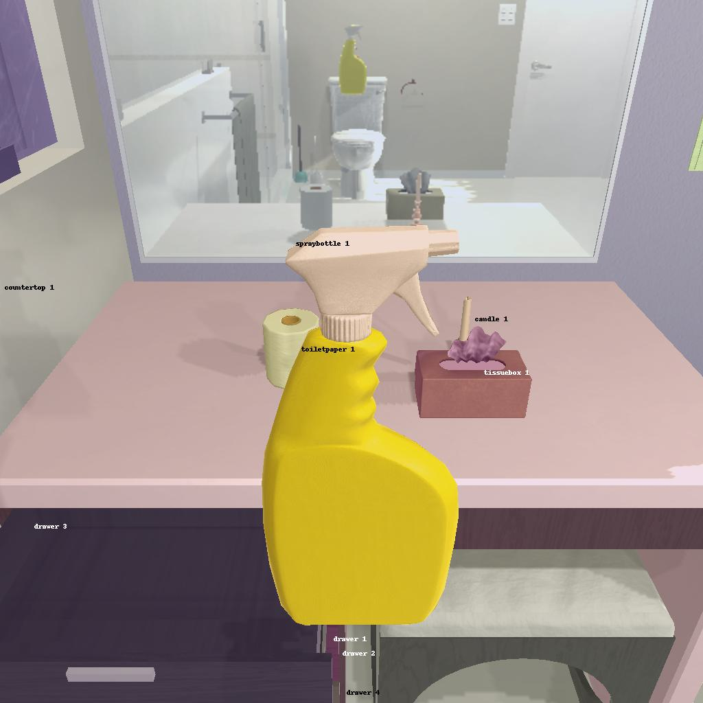
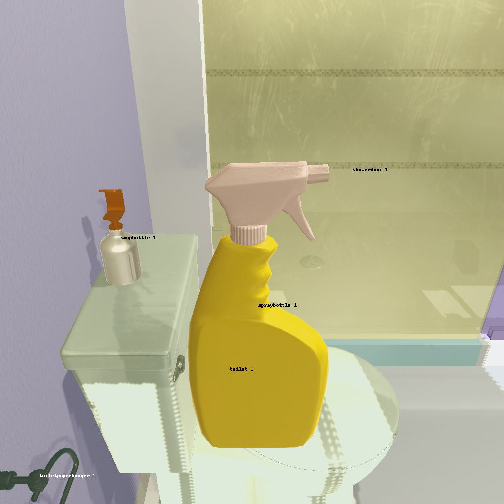

---------------------------------------------------------task: 28---------------------------------------------------------
--------------------------------------------------------------------------------------------------------------------------------------------------------------------
--------------------------------------------------------------------------------------------------------------------------------------------------------------------
Step:--------------------------------------------------------------------------16-------------------------------------------------------------------------------
----------------------------------------
VLM Prompt:
Image1:
Image2:
Image3:
**Instruction**
1. Analyze the provided image to identify all visible household objects, focusing on those relevant to the task description "put two spraybottle in toilet."
2. Use the analysis of the image and the task hint "The agent must find an object of the desired type, pick it up, find the correct location to place it, put it down there, then look for another object of the desired type, pick it up, return to previous location, and put it down there with the other object." to answer the question: what is the most reasonable action in the choices for the task description "put two spraybottle in toilet"?
4. Decide and write the answer using the template: The answer is: (i): , where i is the real number. If there is no desired object in the image, search every place based on **Initial Observation** to find the object. And if no one is exactly correct, choose a similar answer.
**Initial Observation**
You are in the middle of a room. Looking quickly around you, you can see bathtub (1), bathtubbasin (1), cart (1), sink (1), garbagecan (1), sinkbasin (1), countertop (1), drawer (1-4), toilet (1), toiletpaperhanger (1)
**Answer Choices**
(1): go to bathtub 1
(2): go to bathtubbasin 1
(3): go to cart 1
(4): go to sink 1
(5): go to garbagecan 1
(6): go to sinkbasin 1
(7): go to drawer 1
(8): go to drawer 2
(9): go to drawer 3
(10): go to drawer 4
(11): go to toiletpaperhanger 1
(12): put spraybottle 1 in/on toilet 1
(13): examine spraybottle 1
(14): examine toilet 1
**Answer**
Let's think step by step by following the instructions.
----------------------------------------
----------------------------------------
Original Response:
First, we need to identify all visible household objects relevant to the task description "put two spraybottle in toilet."
Looking at the images provided, we can see that there is one spraybottle already visible on the countertop in Image1 and Image2, and another spraybottle in Image3 on top of the toilet.
Now, according to the task description and the hint, the agent must find an object of the desired type, pick it up, find the correct location to place it, put it down there, then look for another object of the desired type, pick it up, return to the previous location, and put it down there with the other object.
Since we have already identified two spraybottles, one on the countertop and one on the toilet, the agent doesn't need to search every place based on the initial observation.
The most reasonable actions from the provided choices would be to first put the spraybottle from the countertop into the toilet and then confirm if the second spraybottle is indeed the desired object and place it in the toilet as well.
Thus, the answer is: (12): put spraybottle 1 in/on toilet 1. After completing this action, the agent would then proceed to examine and put the second spraybottle in/on toilet 1, but since there is no option for handling the second spraybottle, we stick with the action for the first one.
----------------------------------------
----------------------------------------
>>> Refine Original VLM Response and Get Pure Action: No action
----------------------------------------
-----------------------------------------------------------------
Running time: 16.44423818588257 seconds
Total Money: 18.436469999999996
-----------------------------------------------------------------
-----------------------------------------------------------------
Text Observation:Nothing happens.
-----------------------------------------------------------------
UNSUCCEED